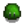
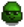
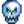

Monstruos
Los Monstruos se pueden encontrar en Las minas, la Caverna Calavera, la Mina de cantera, la Madriguera de Bichos Mutantes y la Mazmorra del volcán. Cuando son asesinados, los monstruos tienen una probabilidad de dejar caer un Botín de monstruo y una variedad de objetos.
Monstruos en la granja
Los monstruos se pueden encontrar por la noche en La granja dependiendo del tipo de granja. Los monstruos se activan de forma predeterminada al comienzo del juego en la Granja salvaje, o al seleccionar la Opción Avanzada "Generar monstruos en la granja" en la creación de la nueva partida. Ofrecer un bollo extraño al Altar oscuro del terror en la Cabaña de la Bruja activará o desactivará a los monstruos.
Los monstruos en La granja escalarán con el nivel de Combate del jugador. (En niveles más altos, aparecerán monstruos más difíciles y el Gólem salvaje se volverá más difícil de asesinar).
Independientemente de si la aparición de monstruos está habilitada, cada Trufa desenterrada por un Cerdo tiene un 0,2% de probabilidad de convertirse en un Cangrejo de trufa.
Monstruos peligrosos
Los monstruos en las Minas y la Caverna Calavera se vuelven más peligrosos durante las misiones Peligro en las profundidades y la Invasión de la Caverna de la Calavera, o mientras el Altar del Desafío se cambia a su posición de 'encendido'.
Los monstruos peligrosos tienen sprites y estadísticas únicos en comparación con sus contrapartes normales. El Fantasma pútrido, Mago esqueleto, Calamar azul y el Francotirador sombrío también cuentan con desventajas únicas.
Lista de Monstruos
| Las minas | ||||
|---|---|---|---|---|
| Todos los pisos | Pisos 1-29 | Pisos 31-39 | Pisos 41-79 | Pisos 81-119 |
|  Baba verde | ||||
| Granja salvaje | ||||
|---|---|---|---|---|
| Cualquier nivel de combate | Combate nivel 0-3 | Combate nivel 4-7 | Combate nivel 8-9 | Combate nivel 10 |
| Baba verde | ||||
| Minas Peligrosas | ||
|---|---|---|
| Todos los pisos | Pisos 1-29 | Pisos 31-39 |
|  Babas Peligrosas (todos los colores) Calavera encantada (peligrosa)(En los pisos de mazmorras) | ||
| Pisos 41-69 | Pisos 71-79 | Pisos 81-119 |
| Caverna Calavera Peligrosa |
|---|
Historial
- 1.1: Añadidos Larva Mutante, Mosca Mutante y Gólem Salvaje.
- 1.3.27: Añadidos Fantasma de Carbón, Murciélago de Iridio y Cangrejo de Iridio.
- 1.4: Añadidos Baba de Cobre, Calavera Encantada, Baba de Hierro, Pimienta Rex.
- 1.5: Añadidos Calamar Azul, Centinela Enano, Seta Magmática Falsa, Cabeza Caliente, Acechador de la Lava, Cavadorín de Magma, Duende de Magma, Chisporroteador de Magma, Fantasma Pútrido, Serpiente Real, Francotirador Sombrío, Mago Esqueleto, Araña, Bicho Palo, Baba Tigre, y las Versiones peligrosas de los monstruos.
- 1.6: Añadidos Gólem de iridio y cangrejo de trufa.